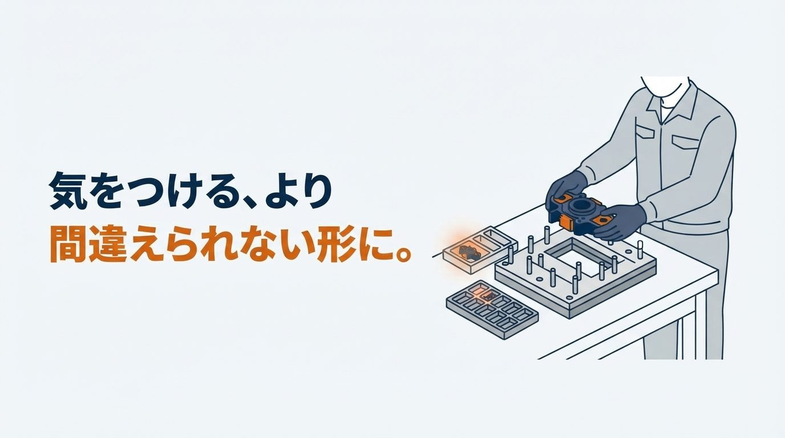
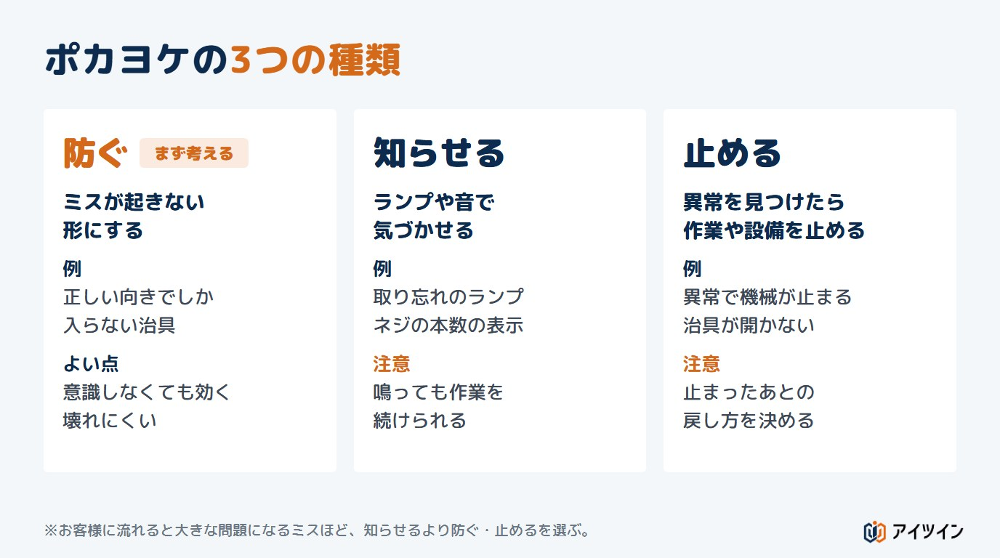
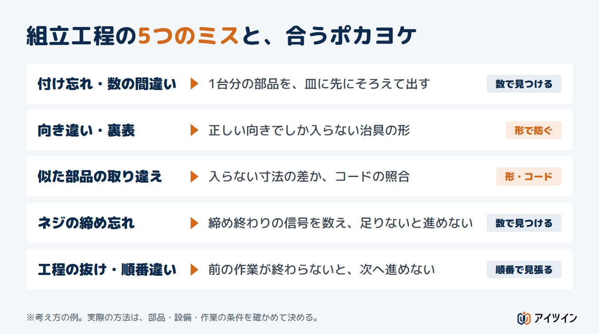
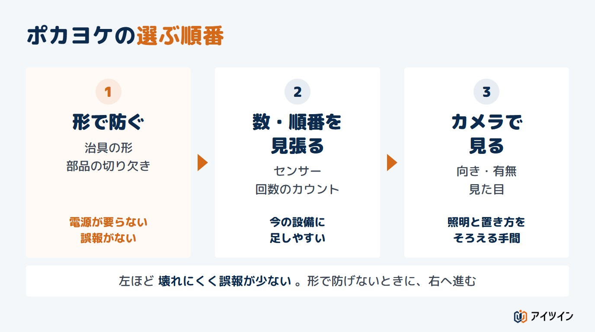

「何度注意しても、同じ付け忘れが起きる」「ポカヨケを入れたいが、治具がよいのか、センサーやカメラがよいのか決められない」。ポカヨケを調べると、意味やメリットの説明、製品の紹介は多く見つかります。一方で、自分の現場のミスに、どのポカヨケを選べばよいかまでは、あまり書かれていません。
本記事では、ポカヨケの意味と由来、防ぐ・知らせる・止めるの3つの種類、組立工程でよく起きる5つのミスの事例を整理したうえで、ミスに合った方法の選び方をご紹介します。後半では、治具で防ぐときのコツ、センサーやカメラで小さく試す進め方、自動車部品の工場で求められる確かめ方にも触れます。ミスの種類を選ぶと、合うポカヨケの候補が出るツールも付けました。
この記事でわかること
- ポカヨケの意味と、トヨタ自動車などの現場で広まった由来
- 防ぐ・知らせる・止めるの3つの種類と、ミスの見つけ方3つ
- 付け忘れ・向き違い・取り違えなど、組立工程の5つのミスの事例
- ミスに合ったポカヨケの選び方と、候補を出すツール
- 治具で防ぐコツと、センサー・カメラで小さく試す進め方
ポカヨケとは｜意味と由来、フールプルーフとの違い
ポカヨケは「うっかりミスを仕組みで防ぐ」工夫
ポカヨケは、作業の中で起きるうっかりミス（ポカ）を、人の注意力に頼らず、道具や設備の仕組みで避ける工夫のことです。たとえば、正しい向きでしか部品が入らない治具や、部品を取り忘れるとランプで知らせる棚がポカヨケにあたります。「気をつける」ではなく「間違えられない」「間違えたらすぐ分かる」形にするのが、ポカヨケの考え方です。
トヨタ自動車などの現場で広まり、英語でもPoka-yokeと呼ばれる
ポカヨケは、日本の製造業の現場改善の中で発展した考え方で、生産改善の指導をしていた新郷重夫氏が、トヨタ自動車などの現場で実践し、体系にまとめたことで広まったとされています。はじめは「バカヨケ」と呼ばれていましたが、その言葉が作業者を傷つけるおそれがあることから、誰にでも起こりうるうっかりミスを防ぐという意味で「ポカヨケ」と呼ぶようになったと言われます。品質を後の検査で選り分けるのではなく、工程の中で作り込むための道具として、今では海外でも「Poka-yoke」のまま通じます。英語では、mistake-proofing や error-proofing とも言います。
フールプルーフ・フェイルセーフとの違い
よく似た言葉に、フールプルーフとフェイルセーフがあります。フールプルーフは、使う人が誤った操作をしても、事故や故障につながらないようにする設計の考え方です。ポカヨケと重なる部分が多い一方で、ポカヨケは主に工場の作業ミスや品質不良（付け忘れや取り違え）を防ぐ場面で使われます。フェイルセーフは、機械や仕組みに故障や異常が起きたときに、安全な状態へ移す、被害を小さく抑えるという考え方で、主に安全のための言葉です。
この章のまとめ
- ポカヨケは、うっかりミスを人の注意でなく仕組みで防ぐ工夫
- 新郷重夫氏がトヨタ自動車などの現場で実践して広まり、英語でもPoka-yokeと呼ばれる
- フールプルーフは重なる部分が多く、フェイルセーフは主に安全のための言葉
ポカミスが起きる5つの理由
ポカヨケを選ぶ前に、ミスがなぜ起きるのかを分けて考えておくと、手の打ち方が見えてきます。現場でよくある理由は、次の5つです。
理由1：見落とす・見間違える
部品が似ている、ラベルの文字が小さい、照明が暗いなど、正しく見分けられないことで起きます。
理由2：忘れる・飛ばす
途中で声をかけられた、手順が多いなど、作業の一部を抜かしてしまうことで起きます。
理由3：思い込む
前の品種と同じだと思った、いつもと同じ数だと思ったなど、確かめずに判断することで起きます。
理由4：手がすべる・動きを間違える
向きを逆に置いた、隣の穴に入れたなど、分かっていても動きが合わないことで起きます。
理由5：慣れて省く
急いでいるから確認を省く、面倒な手順を自分なりに変えるなど、決まりを守らないことで起きます。ここは仕組みだけでは防ぎきれず、決まりを守りやすい手順にすることも必要です。
この章のまとめ
- ポカミスは、見落とし・忘れ・思い込み・動きの間違い・省略の5つで起きる
- 理由が分かると、形で防ぐか、数や順番で見張るかを決めやすい
- 「慣れて省く」は、守りやすい手順づくりもセットで考える
ポカヨケの種類｜防ぐ・知らせる・止めるの3つ

防ぐ・知らせる・止めるの違い
新郷氏は、ポカヨケの働きを、ミスを起こさせない・止める「規制」と、ミスを知らせる「警告」の2つに大きく分けました。海外の解説では、規制をさらに分けて「停止・制御・警告」の3つで説明することもあります。本記事では分かりやすく、防ぐ・知らせる・止めるの3つで説明します。1つ目の防ぐは、ミスが起きない形にする、不良を次の工程へ流さない形にするものです。正しい向きでしか入らない治具が代表です。2つ目の知らせるは、ミスや異常を、ランプやブザーで作業者に気づかせるものです。3つ目の止めるは、異常を見つけたときに、作業や設備を止めるものです。お客様に流れると大きな問題になるミスほど、知らせるより防ぐ・止めるを選びます。
ミスの見つけ方は「形・数・順番」の3つ
知らせる・止めるためには、ミスを見つける方法が要ります。新郷氏の分け方では、見つけ方は3つです。形で見つける方法（接触式）は、部品の形・寸法・位置の違いを、治具やセンサーで確かめます。数で見つける方法（定数式）は、取り出した部品の数やネジを締めた回数を数え、決まった数に足りなければ知らせます。順番で見つける方法（動作ステップ式）は、決まった作業や動作が、正しい順番で行われたかを見張ります。
ポカヨケの種類のメリット・デメリット比較一覧
| 種類 | 例 | よい点 | 気をつけたい点 |
|---|---|---|---|
| 防ぐ | 正しい向きでしか入らない治具、似た部品が入らない寸法の差 | 作業者が意識しなくても効く。壊れにくい | 品種が増えると治具の作り直しが要る。形で区別できないミスには使えない |
| 知らせる | 取り忘れのランプ、ネジの本数の表示、音での警告 | 今の設備に後から足しやすい | 鳴っても作業を続けられる。誤報が多いと無視されやすい |
| 止める | 異常を見つけたら機械が止まる、数が足りないと次の工程の治具が開かない | ミスを先へ流さない | 止まったあとの戻し方を決めないと、現場が困る。設備側の改造が要ることが多い |
この章のまとめ
- ポカヨケの働きは、防ぐ・知らせる・止めるの3つ（新郷氏の分け方では規制と警告の2つ）
- ミスの見つけ方は、形（接触式）・数（定数式）・順番（動作ステップ式）の3つ
- 流れると大きな問題になるミスほど、防ぐ・止めるを選ぶ
ポカヨケの事例｜組立工程の5つのミスで考える
ここでは、自動車部品のような組立工程でよく起きる5つのミスを例に、ポカヨケの事例をご紹介します。どれも、考え方の例として一般的な方法をまとめたものです。

事例1：部品の付け忘れ・数の間違い｜1台分ずつ出す
部品を箱から必要な数だけ取る作業では、取り忘れや数の間違いが起きやすくなります。1台分の部品を、仕切りのある皿に先にそろえておけば、皿に部品が残っていることで付け忘れに気づけます（数で見つける方法）。部品箱ごとにセンサーを付け、取り出すべき箱をランプで示し、違う箱に手を入れたら知らせる仕組みもあります。
事例2：向き違い・裏表の間違い｜正しい向きでしか入らない形
左右や裏表が分かりにくい部品は、治具の受けの形を部品に合わせ、逆向きでは置けないようにします。部品の側に、向きを決める切り欠きや段差を設計で付けておくのも効果的です。どうしても形で区別できない場合は、センサーやカメラで向きを確かめます。
事例3：似た部品の取り違え｜入らない寸法の差か、コードの照合
寸法がわずかに違う部品や、色だけが違う部品は取り違えが起きやすくなります。設計を変えられるなら、取り付け穴の位置やピンの太さに差をつけ、違う部品は入らないようにします。変えられない場合は、部品と作業指示のコード（バーコードやQRコード）を読み、合っているかを照らし合わせます。読み取りの仕組みは、特集の記事「ラズパイでQRコードを読み取る方法」でも紹介しています。
事例4：ネジの締め忘れ・締め不足｜締めた回数を数える
ネジが何本もある部品では、1本だけ締め忘れることがあります。締め付けの終わりを知らせる信号が出せる工具なら、その信号の回数を数え、決まった本数に足りなければ次の部品へ進ませないようにできます。締める強さの管理まで要る場合は、締め付けの力を管理できる工具と組み合わせます。
事例5：工程の抜け・順番違い｜前の作業が終わらないと次へ進めない
作業の順番が決まっている工程では、ひとつ飛ばしても気づきにくいことがあります。前の作業の完了を確かめてから次の治具のロックを外す、画面で次の作業を一つずつ示すなど、順番を見張るポカヨケが向いています。
この章のまとめ
- 付け忘れは1台分ずつ出す、向き違いは形で防ぐ
- 取り違えは入らない寸法の差かコードの照合、締め忘れは回数を数える
- 順番違いは、前の作業が終わらないと次へ進めない形にする
ミスに合ったポカヨケの選び方
まずはここから｜ミスの種類と、流れたときの影響を書き出す
ポカヨケ選びで迷ったら、まずどんなミスが、どの工程で、月に何回くらい起きているかと、そのミスがお客様に流れたら何が起きるかを書き出します。同じ付け忘れでも、外から見えない部品で、流れると不具合につながるなら止める、次の工程ですぐ分かるなら知らせる、というように選ぶ種類が変わります。
選ぶ順番は「形で防ぐ → 数や順番で見張る → カメラで見る」
方法を選ぶときは、まず形で防げないかを考え、次にセンサーで数や順番を見張り、それでも難しいときにカメラを使う順番がおすすめです。形で防ぐ方法は、一度作れば電源も要らず、誤報もありません。センサーは今の設備に足しやすく、カメラは向きや有無など、いろいろなミスを見られる代わりに、照明や置き方をそろえる手間がかかります。

ミスに合ったポカヨケの候補を出すツール
ミスに合ったポカヨケの候補を出すツール｜ミスの種類と影響から、方法の候補と確かめ方を見る
いちばん困っているミスと、その条件を選ぶと、ポカヨケの種類（防ぐ・知らせる・止める）、ミスの見つけ方、方法の候補、作ったあとの確かめ方を出します。選んだ内容は、このページの中だけで使い、どこにも送りません。はじめは、ネジの締め忘れの例です。
どんなミスですか
そのミスが流れたら
部品や治具の形を変えられますか
品種の数は
結果
| 選ぶ種類 | |
|---|---|
| ミスの見つけ方 | |
| 第1候補 | |
| 第2候補 | |
| 作ったあとの確かめ方 |
この章のまとめ
- ミスの種類・回数と、流れたときの影響を先に書き出す
- 形で防ぐ → 数や順番で見張る → カメラで見る、の順に考える
- 流れると大きな問題になるミスは、知らせるだけでなく止める
治具で防ぐポカヨケの作り方のコツ
形で防ぐポカヨケの中心は、治具です。治具は、作業の中で部品を決まった位置に置き、押さえるための道具です。ポカヨケとして効く治具にするには、次の4つを考えます。
コツ1：部品の基準を決め、そこで位置を決める
部品のどの面・どの穴を基準にするかを先に決め、治具はその基準で位置を決めます。基準があいまいだと、正しい向きでも少しずれた位置に置けてしまい、ポカヨケが効きません。
コツ2：左右で形を変え、逆向きでは置けないようにする
位置決めのピンを左右で太さ違いにする、片側だけ当たりを付けるなど、正しい向きのときだけ収まる形にします。左右対称の部品でも、どこか1か所に非対称の当たりがあれば、逆置きを防げます。
コツ3：置き忘れが目で分かるようにする
部品の形にくりぬいた置き場や、部品がないと見える色の印を付けておくと、置き忘れが一目で分かります。センサーを付けるときも、この置き場に付けると見張りやすくなります。
コツ4：作業のじゃまにならない形にする
ポカヨケのせいで部品が入れにくい、取り出しにくい治具は、使われなくなります。正しい作業がいちばん楽な形になっているかを、実際に作業する人と一緒に確かめます。
この章のまとめ
- 部品の基準を決め、治具はその基準で位置を決める
- 左右で形を変え、正しい向きのときだけ収まるようにする
- 置き忘れが見える形にし、正しい作業がいちばん楽な治具にする
センサー・カメラ・ラズパイでポカヨケを小さく試す
いきなり装置を買わず、一つのミスに絞って試す
形で防げないミスは、センサーやカメラで見張ります。このとき、いきなり大きな装置を入れるより、いちばん困っている一つのミスに絞って、小さく試すのがおすすめです。小さなコンピューターのラズパイを使えば、センサーの信号を数える、ランプで知らせる、カメラで有無を見るといった仕組みを、安く試作できます。使い方の全体は、特集の記事「ラズパイの製造業での使い方」で紹介しています。
構成例：ネジの本数と部品の取り出しを見張る
たとえば、締め付けの終わりの信号と、部品箱のセンサーの信号をラズパイで受け、1台分の本数や部品がそろったら画面を緑に、足りなければ赤にして知らせる、という構成が考えられます。次の工程に進ませないようにしたい場合は、ラズパイから設備の制御装置（PLC）へ結果を渡し、止めるかどうかは制御装置の側で判断する形にします。つなぎ方は、特集の記事「PLCとラズパイの接続方法」をご覧ください。
安全に関わる働きには使わない
ラズパイなどで作る仕組みは、品質のミスを見張るためのものです。安全扉や非常停止のように、人の安全を守る働きには使いません。安全に関わる部分は、安全のために作られた機器と回路で守ります。
この章のまとめ
- 形で防げないミスは、一つに絞ってセンサーやカメラで小さく試す
- 止める判断は、設備の制御装置の側で行う
- 自作の仕組みは、人の安全を守る働きには使わない
自動車部品の工場で求められるポカヨケ
品質の規格では、ポカヨケの確かめ方まで求められる
自動車部品の工場の多くが取り組む品質の規格（IATF 16949:2016）には、「10.2.4 ポカヨケ」の項目があります。適切なポカヨケの方法を決める手順を文書にすること、使う方法を工程のリスク分析（工程FMEAなど）に記録すること、試す頻度を管理計画書に書くこと、そしてポカヨケが働くかを、故障や故障をまねた状態で試し、その記録を残すことなどが求められます。
わざと不良にした見本で、働くかを試す
ポカヨケが働くかを試すには、ネジを1本抜いた部品や、向きを逆にした部品など、わざと不良にした見本（チャレンジ部品）を使い、本当に知らせる・止まるかを確かめます。規格では、見本を使う場合は、見分けられるようにして管理し、確かめ、できる場合は校正することも求められます。センサーが壊れて素通りになっていても、ふだんの作業では気づけないためです。
働かなかったときの対応を先に決める
規格では、ポカヨケの装置が故障したときの対応の計画を決めておくことも求められます。取引先の求め（顧客固有の要求）によっては、その計画に、疑わしい製品を出さないための封じ込めを含めるよう求められることもあります。封じ込める製品の範囲は、最後に正しく働くことを確かめた時点や、製品をたどれる記録をもとに決めます。細かい求めは、規格の原文と取引先の要求を、社内の品質の担当の方に確かめてください。
この章のまとめ
- 自動車部品の品質の規格（IATF 16949）には、ポカヨケの項目がある
- わざと不良にした見本で、働くかを決めた頻度で試し、記録を残す
- 故障したときの対応の計画を先に決める。取引先によっては封じ込めも求められる
ポカヨケの導入でよくある失敗
失敗1：誤報が多く、電源を切られる
正しく作業しているのに鳴るポカヨケは、すぐに切られます。センサーの位置や感度を、実際の作業の動きで確かめてから使い始めます。
失敗2：迂回されて、効かなくなる
センサーをふさぐ、治具を外して作業するなど、ポカヨケがじゃまになると迂回されます。迂回したくなる理由（入れにくい、時間がかかる）を聞き、形を直します。
失敗3：壊れていても気づかない
ポカヨケは、ふだんはミスがないので鳴りません。そのため、壊れていても気づけません。始業時に不良の見本で試すなど、働くかを確かめる手順を決めておきます。
失敗4：品種が増えて合わなくなる
新しい品種が増えたときに、治具やセンサーの設定が合わないまま使われることがあります。品種を増やすときは、ポカヨケも見直す項目に入れておきます。
この章のまとめ
- 誤報と迂回は、作業する人の動きで確かめて直す
- 壊れていても鳴らないので、働くかを試す手順を決める
- 品種を増やすときは、ポカヨケも見直す
ポカヨケについてよくある質問
ポカヨケで、ミスはゼロにできますか？
形で防ぐポカヨケは、そのミスについてはほぼ起きなくできます。ただ、すべてのミスを仕組みで防ぐのは難しいため、影響の大きいミスから順に手を打ちます。
小さな工場でもポカヨケは作れますか？
作れます。部品を1台分ずつ皿に出す、置き場の形を部品に合わせるなど、お金をかけずにできる方法から始められます。
ポカヨケとダブルチェックは、どちらがよいですか？
人のダブルチェックも、慣れると見落としが起きます。できるところは仕組みで防ぎ、人の確認は仕組みで見られない部分に絞るのがおすすめです。
アイツインのポカヨケづくりの支援
アイツインは、設備の保全と自動化の設計、画像を使った検査の仕組みを自分で作って現場に入れてきた経験をもとに、ポカヨケづくりをお手伝いしています。
治具の設計から、センサー・カメラの仕組みの試作まで
形で防ぐ治具の設計（3Dモデルと部品図）と、センサーやカメラ、ラズパイを使った見張りの仕組みの試作を、どちらもお受けしています。ミスの種類をうかがい、どちらが合うかから一緒に考えます。治具の形や、センサー・カメラの置き場所は、作る前に画面の上で試すこともできます。
まずはお気軽にご相談ください｜困っているミスの整理から
「同じ付け忘れが何度も起きる」「治具とセンサーのどちらがよいか分からない」という段階からご相談いただけます。ご相談とお見積もりは無料です。
まとめ
ポカヨケは、うっかりミスを人の注意でなく仕組みで防ぐ工夫で、トヨタ自動車などの現場で広まりました。働き方で、防ぐ・知らせる・止めるの3つに分けられ、ミスの見つけ方には形・数・順番の3つがあります。選ぶときは、ミスと流れたときの影響を書き出し、形で防ぐ → 数や順番で見張る → カメラで見る、の順に考えます。
作ったあとは、誤報や迂回がないかを作業する人と確かめ、働くかを試す手順を決めておきましょう。まずは上のツールで、いちばん困っているミスを選んでみるところから始めてみてください。
参考
・本記事の事例は、組立工程で一般的に使われる方法を、考え方の例としてまとめたものです。ラズパイを使った構成は構成例で、筆者が同じ形で作って動かしたものではありません。
・ツールの結果は、選んだ条件だけから出した候補です。実際の方法は、部品・設備・作業の条件を確かめて決めてください。
・安全扉・非常停止など、人の安全に関わる働きは、安全のための機器と回路で、決まった手順に沿って設計してください。
・参考にした資料：IATF 16949:2016（自動車産業の品質マネジメントシステムの規格）の「10.2.4 ポカヨケ」と、自動車メーカーの顧客固有の要求の例／新郷重夫『源流検査とポカヨケ・システム』（日本能率協会、1985年）／Shigeo Shingo, Zero Quality Control（1986年）／ポカヨケの働き（規制・警告、停止・制御・警告）と見つけ方（接触式・定数式・動作ステップ式）を説明した大学の論文／情報処理推進機構（IPA）『組込みシステムの安全性向上の勧め（機能安全編）』（フェールセーフとフールプルーフ）

この記事を書いた人
株式会社アイツイン 代表 加瀬部 裕紀
製造業に15年在籍し、設備の保全と設計の両方を経験。現場と同じ目線で、計算・設計のお手伝いや、省力化・デジタルツインの導入を支援しています。